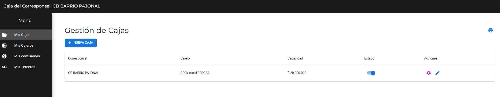
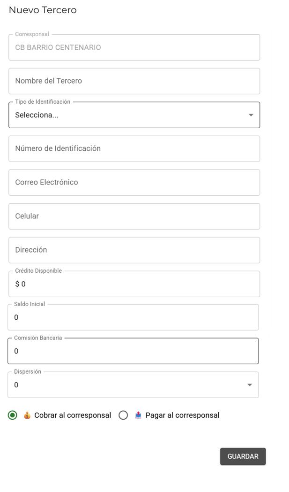
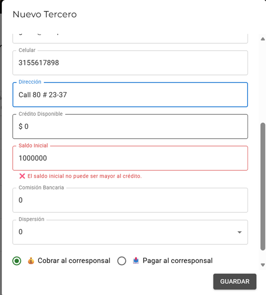

Cambios propuestos para el rol ADMIN. Al igual que en el rol SuperAdmin, se va a ir numerando cada punto según el menú donde se realiza el cambio.
Cambios en Rol ADMIN CONTEXTO
Actualmente el Admin tiene 4 menús en la barra lateral, como se ve en la imagen. Hay que agregar nuevas opciones al menú y hacer modificaciones en algunos de los menús ya existentes:

Sistema de notificaciones A PROGRAMAR
Base genérica para avisarle al Admin cosas que necesita saber sin tener que estar revisando pantallas por su cuenta — el primer caso de uso es "todos los cajeros de este CB ya cerraron, ya puedes conciliar contra el banco" (ver Cambio 3.1 en Rol Cajero), pero está pensado para reutilizarse en otros avisos futuros (por ejemplo, un cajero con demasiado dinero en caja).
Regla de disparo para este caso: nunca se le pregunta al cajero si es "el último" — eso no se puede saber si varios cierran al mismo tiempo. Cada vez que un cajero cierra caja, el sistema cuenta cuántos cajeros de ese CB ya cerraron hoy contra cuántos tiene asignados en total (dato que ya existe en "Mis Cajeros"). Si coinciden, se crea la notificación automáticamente.
Campo
Para qué sirve
rol / usuario
Quién debe recibirla (ej. el Admin de un CB específico).
CB
A qué corresponsal pertenece.
tipo
Qué clase de aviso es (ej. conciliacion_lista), para poder filtrar o darle un ícono distinto.
mensaje
El texto que se muestra.
leída
Si el usuario ya la vio.
fecha
Cuándo se generó.
Así se vería la campanita:
0
Pruébalo: ve a Rol Cajero → Cambio 3.1 (demo de Cierre de Caja), marca "Este CB tiene: Varios cajeros", y cierra la caja de los 3 cajeros que aparecen (en cualquier orden, con su propio botón "Cerrar caja" cada uno). El sistema cuenta el progreso solo — nadie tiene que avisar que ya cerró — y apenas cierra el tercero, la campanita de aquí muestra el aviso.
1. Sub Menú: Mis Cajas BUG / AJUSTE REQUERIDO
Al crear una nueva caja y cuando se le da en seleccionar Cajero, aparecen todos los perfiles de cajeros que están creados (de todos los corresponsales). Deben listarse únicamente los cajeros que ha creado el Admin para el corresponsal donde se está haciendo el setup inicial.
2. Sub Menú: Mis Cajeros AJUSTE REQUERIDO
El cambio en este menú es cuando se va a crear un nuevo cajero y consiste en:
Normalizar mayúsculas/minúsculas automáticamente al guardar el campo Nombre: la primera letra de cada palabra en mayúscula y el resto en minúscula.
Antes (actual)
Después (a programar)
juan carlos gomez
Juan Carlos Gomez
MARIA JOSE PEREZ
Maria Jose Perez
3. Sub Menú: Mis Comisiones SIN CAMBIOS
Este menú queda igual — no se proponen cambios.
4. Sub Menú: Mis Terceros CONTEXTO
Los terceros son personas o empresas que, en la mayoría de los casos, entregan dinero al corresponsal y luego el CB les devuelve ese dinero a través de movimientos, o les recoge efectivo hasta agotar la cantidad enviada. También puede pasar al revés: que sea el CB quien le preste dinero al tercero, por ejemplo facilitándole un cupo de crédito por un valor determinado, y a ese tercero se le pueden hacer movimientos o entregas en efectivo hasta agotar ese cupo otorgado.
A los terceros se les genera una comisión cuando entregan dinero al CB (préstamo de tercero), de dos formas:
Comisión bancaria: valor que cobra el banco.
Dispersión: valor que cobra el CB al tercero.
Para calcular correctamente estas 2 comisiones en cada envío que hace el tercero, hay que hacer los siguientes 4 cambios en el código:
CAMBIO 1 Nuevo método de envío a agregar CAMBIO EN CÓDIGO
Actual
Transferencia
Compensación
Consignación en sucursal
Consignación Cajero
Consignación CB
Entrega en efectivo
Nuevo (con el método agregado)
Transferencia
Compensación
Compensación a otro CB ← NUEVO
Consignación en sucursal
Consignación Cajero
Consignación CB
Entrega en efectivo
CAMBIO 2 Comisión bancaria por método YA EN CÓDIGO
Método de envío
¿Genera comisión bancaria?
Transferencia
NO
Compensación
NO
Compensación a otro CB
NO · NUEVO
Consignación en sucursal
SI
Consignación Cajero
SI
Consignación CB
SI
Entrega en efectivo
SI
CAMBIO 3 Dispersión por método AJUSTE REQUERIDO
Actual (en código)
Existe 1 solo campo de "Dispersión" por tercero
Ese mismo valor se aplica a los 7 métodos de envío por igual
Propuesto (a programar)
Un valor de dispersión independiente por cada método
7 campos en total, uno por método de envío
Método de envío
Dispersión
Transferencia
Valor propio (0 a 8 x1000)
Compensación
Valor propio (0 a 8 x1000)
Compensación a otro CB
Valor propio (0 a 8 x1000)
Consignación en sucursal
Valor propio (0 a 8 x1000)
Consignación Cajero
Valor propio (0 a 8 x1000)
Consignación CB
Valor propio (0 a 8 x1000)
Entrega en efectivo
Valor propio (0 a 8 x1000)
CAMBIO 4 Cambios en el formulario de creación de tercero A PROGRAMAR
Así se ve hoy el formulario de creación de tercero:

Antes (actual)
Formulario vertical, con scroll
Corresponsal, Nombre, Tipo/Número de identificación, Correo, Celular, Dirección
Crédito Disponible, Saldo Inicial
Comisión Bancaria: valor sin formato de pesos
1 solo campo de Dispersión (0 a 8 x1000) para todos los métodos
Opción Cobrar / Pagar al corresponsal
Después (a programar)
Formulario en 2 columnas, sin scroll
Columna izquierda: identificación y perfil (igual que hoy)
Columna derecha: parametrización financiera
Comisión Bancaria: con formato de pesos ($ 17.000)
7 campos de Dispersión (0 a 8 x1000), uno por cada método de envío, uno debajo del otro
Opción Cobrar / Pagar al corresponsal
Agregar en checklist la opción de Disponible para depósitos/retiros por datáfono
Propuesta del nuevo formulario de creación de terceros
Nuevo tercero - CB [12029]
Identificación y perfil del tercero
Si se desmarca, este tercero nunca aparecerá listado como destino en el popup de Depósitos/Retiros (ej. cuentas de otros bancos que no se pueden procesar por datáfono).
Parametrización de comisión bancaria y dispersión
Transferencia
012345678
1 x1000
Compensación
012345678
1 x1000
Compensación a otro CB
012345678
1 x1000
Consignación en sucursal
012345678
2 x1000
Consignación Cajero
012345678
2 x1000
Consignación CB
012345678
2 x1000
Entrega en efectivo
012345678
2 x1000
CAMBIO 5 Nueva propuesta para el dashboard de Gestión de Terceros A PROGRAMAR
Dado los cambios en los métodos de envío y el cálculo de la dispersión para cada uno de ellos, la ventana de Gestión de Terceros actual (donde se listan los terceros ya creados) debe cambiar por la siguiente nueva propuesta.
Se quitan las columnas Identificación y Correo Electrónico de la fila principal, para ganar espacio.
La columna Dispersión ahora resume los 7 métodos de envío actuales en un botón expandible ("7 métodos"), ya que no caben como columnas fijas en una sola fila.
Se agrega un acceso directo a WhatsApp junto al celular, para poder contactar al tercero directamente si hay que confirmar o modificar algún dato de su perfil.
Se agrega un buscador arriba de la lista: los terceros se listan en orden alfabético, y al escribir 3 o más caracteres se filtra por el más parecido.
Gestión de terceros
Nombre
Celular
Crédito
Saldo inicial
Comisión bancaria
Dispersión
Estado
5. Sub Menú: Parámetros del Sistema A PROGRAMAR
Menú nuevo, propio del rol Admin (no confundir con "Parámetros del sistema" de SuperAdmin, que es global). Aquí el Admin activa o desactiva, solo para su propio CB, cuáles causas del catálogo global aplican — todas activas por defecto. No puede editar el texto de las causas, ni agregar nuevas directamente: eso lo administra el SuperAdmin.
Catálogo de causas de diferencia — activas para este CB
Cada causa tiene ámbito (Efectivo/Banco) y dirección (Sobrante/Faltante). El cambio se refleja de inmediato en Rol Cajero → Cierre de Caja.
¿Se te ocurre una causa que no está en la lista? Elige "Otra" al cerrar caja y escríbela — queda en una cola de revisión para que el SuperAdmin decida si la incorpora al catálogo global.
Bugs reportados
Rol: Admin
Bug 1: Saldo inicial condicionado al crédito disponible A CORREGIR
Al crear un tercero, el campo Saldo Inicial está condicionando a que su valor no pueda ser mayor al Crédito Disponible:

Nota aclaratoria: el Crédito Disponible es el valor máximo hasta donde un cajero puede entregar dinero o realizar uno o varios movimientos al tercero. Es el equivalente al "Fiado" con que cuenta un tercero en caso de necesitar que le hagan movimientos o se le entregue dinero.
Hay un mal planteamiento en la lógica actual del formulario (Saldo inicial condicionado al crédito disponible), ya que al momento de hacer el setup inicial para cada tercero, el Admin se puede encontrar con estos casos:
A. El tercero puede tener un saldo a favor (ej. $1.000.000) por un préstamo que hizo al corresponsal.
B. El tercero puede tener una deuda porque el CB ya le hizo algunos movimientos (ej. -$600.000) por algunos movimientos anteriores.
En cualquiera de los dos casos, si coloco $1.000.000 (Cobrar al corresponsal) o $600.000 (Pagar al corresponsal), salta la alarma de "El saldo inicial no puede ser mayor al crédito" — y aquí está el bug, porque el saldo inicial no está ligado a qué cupo de crédito le otorgue el CB al tercero (puede darse que este tercero aún no califique para que le otorguen un crédito disponible. Sin embargo, tal como está el formulario actual, obliga a colocar un saldo inicial no mayor al crédito disponible).
Sugerencia para el programador:
El campo Saldo Inicial no debe estar condicionado ni limitado por el valor del Crédito Disponible; son dos conceptos independientes.
El valor del Crédito Disponible se debe usar únicamente para que, una vez el CB esté en producción, el cajero pueda realizar un movimiento (depósito) o una entrega de dinero (retiro con tarjeta o entrega en efectivo) a ese tercero hasta por el monto que ese cupo tenga definido en el setup.
Si el movimiento (tipo depósito) o la entrega de dinero (tipo retiro con tarjeta o entrega en efectivo) supera el Crédito disponible, debe saltar un mensaje indicando que no hay cupo suficiente para realizar la operación.
Bug 2: Terceros sin contraseña asignada A CORREGIR
A los terceros que se crean no se les está asignando una contraseña, por lo que no hay una forma de que accedan al sistema y vean su estado de cuenta.